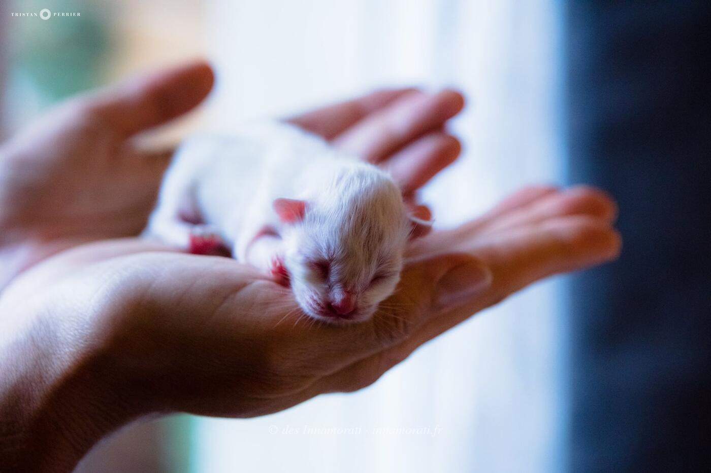


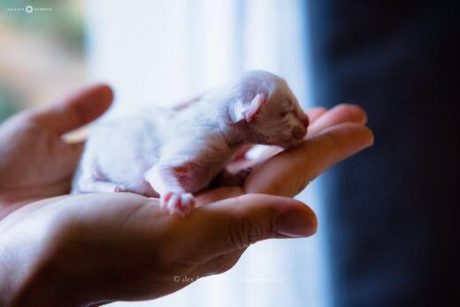


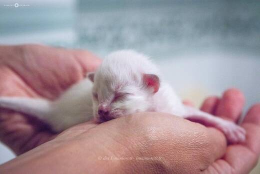


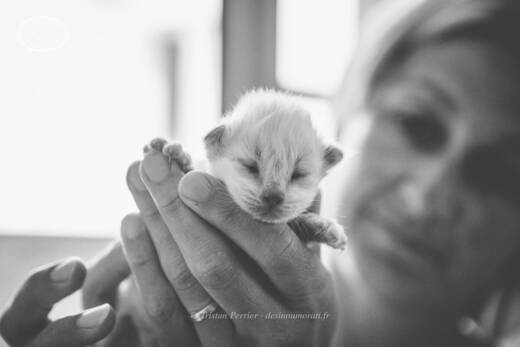


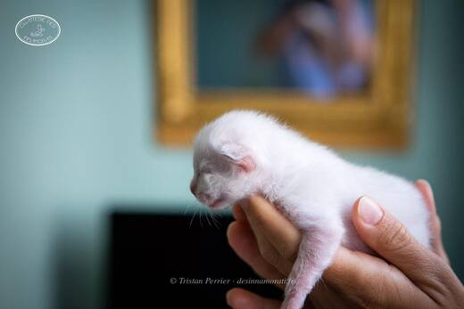


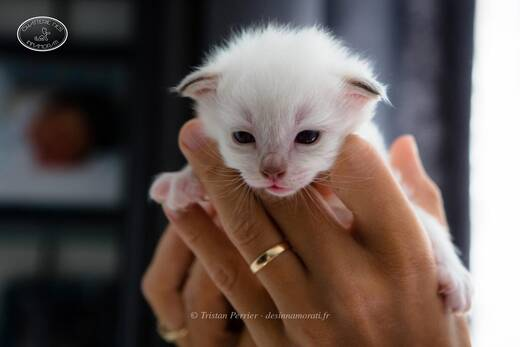

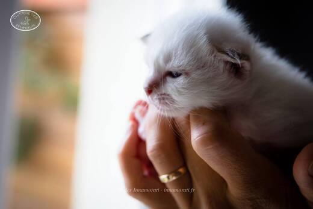

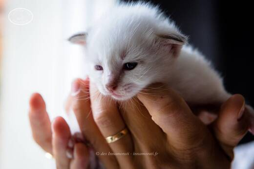

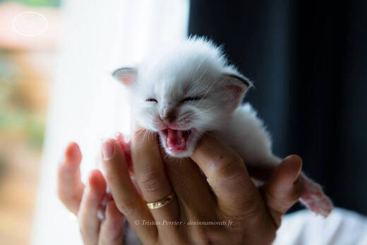

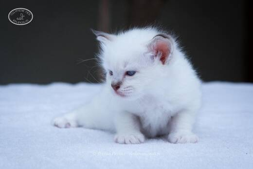

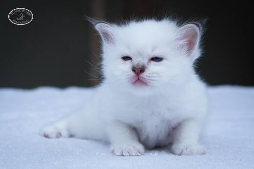

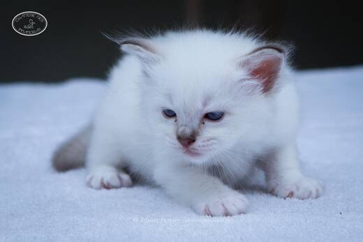

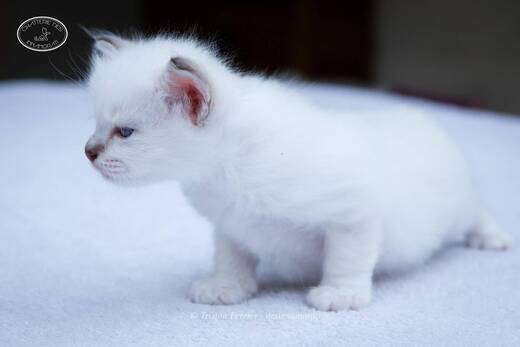

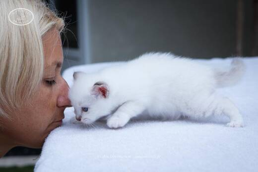

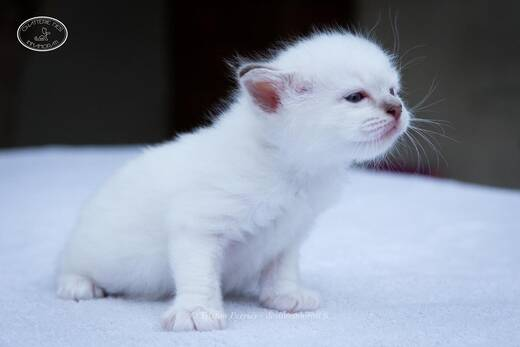

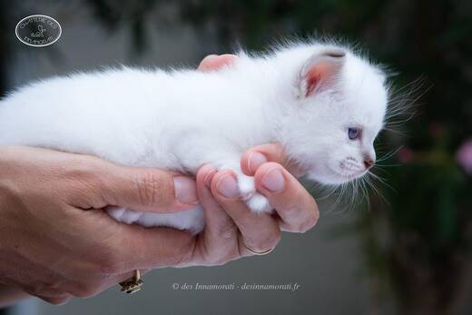

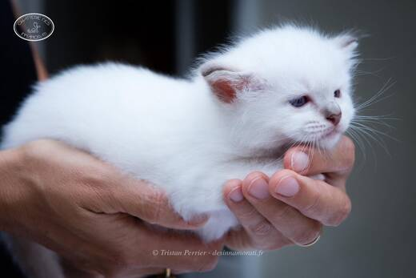

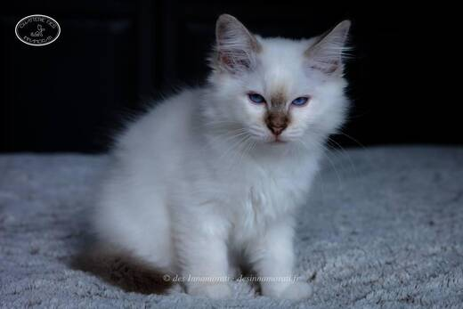

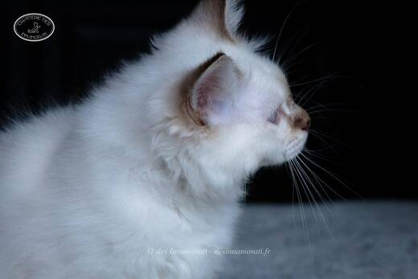

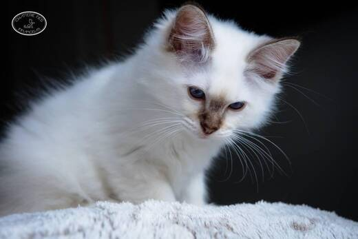

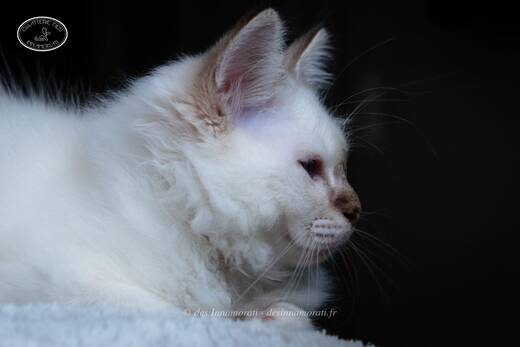

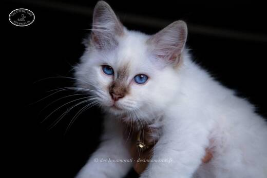

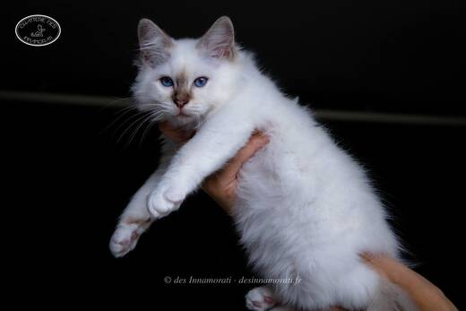

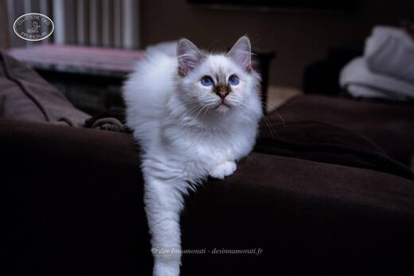

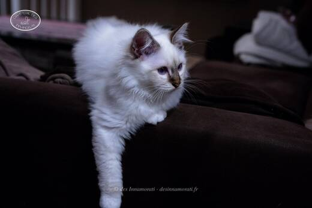

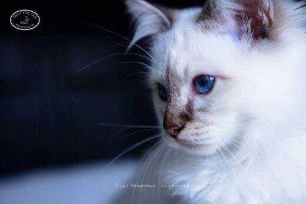

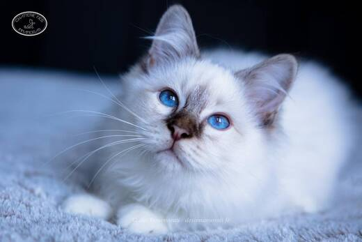

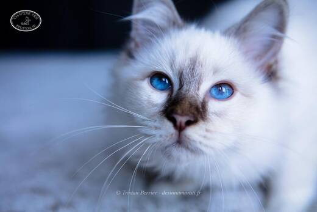

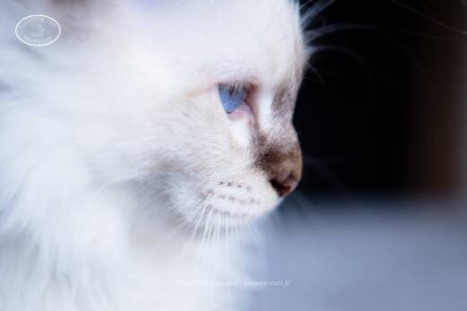

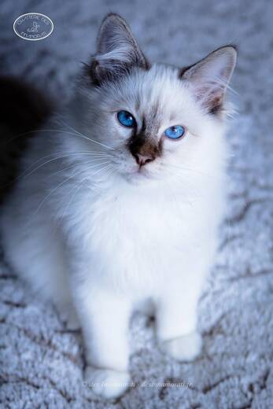

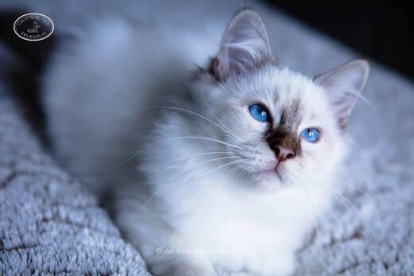

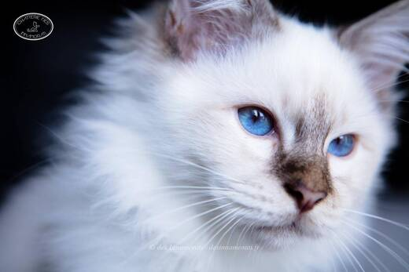

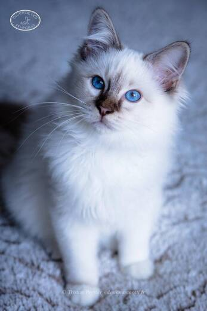

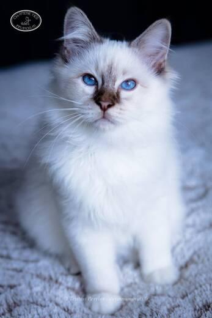

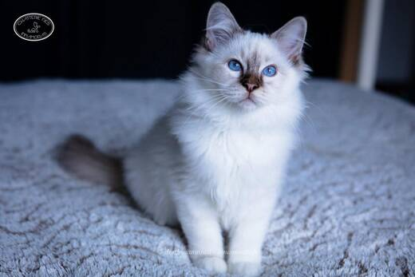

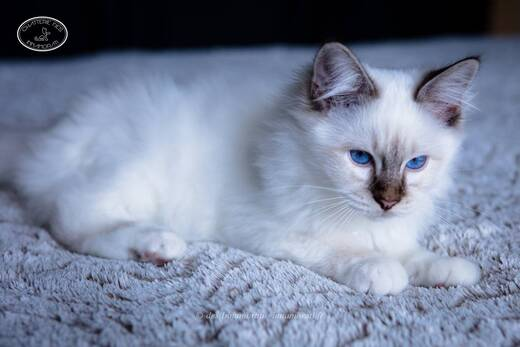


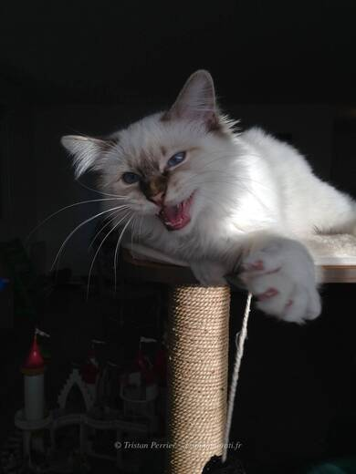

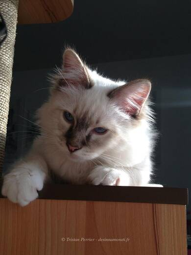

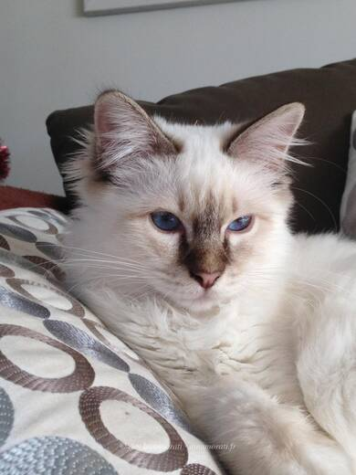

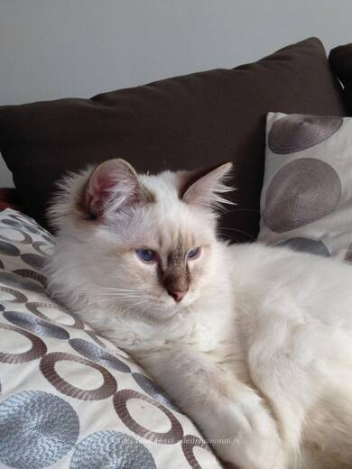

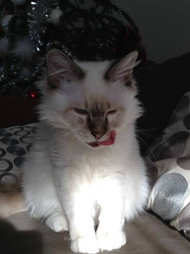

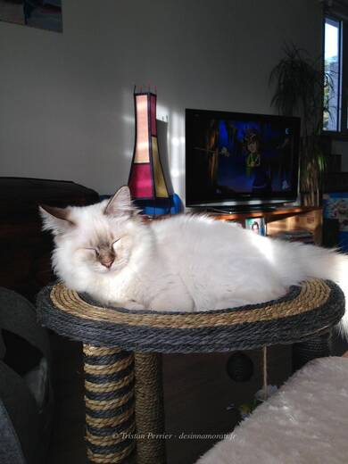

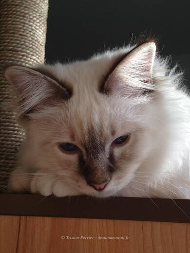

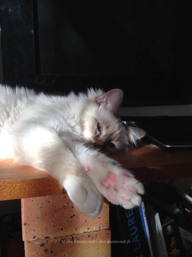

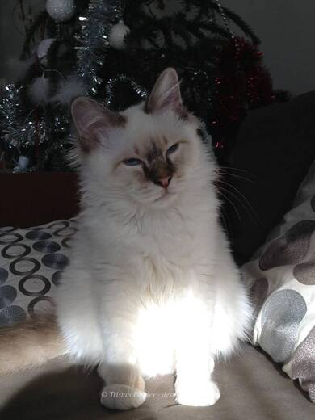

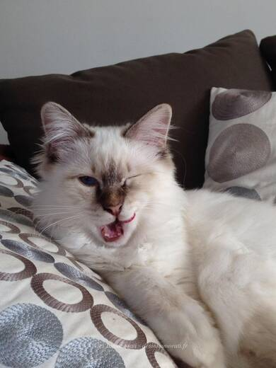

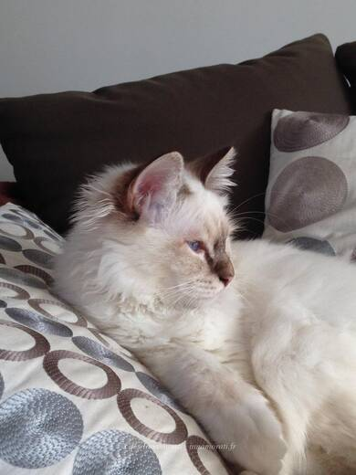

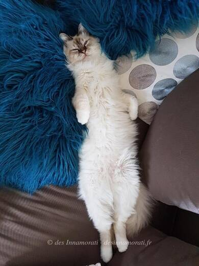

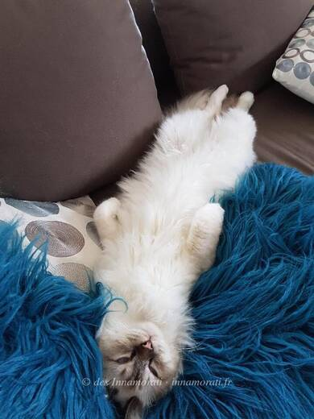

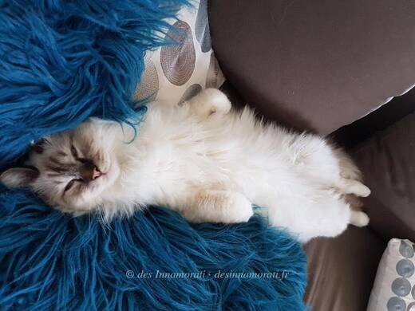


Photos réduites et marquées. Elles appartiennent à la Chatterie des Innamorati et ne peuvent pas être reprises dans une annonce.